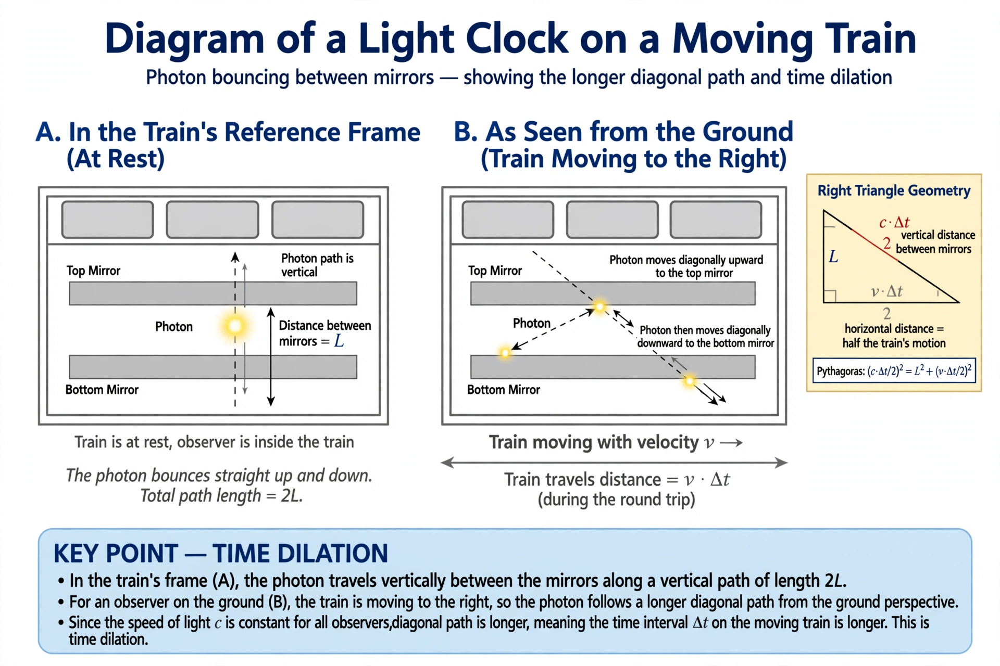

Time dilation

[Image: Diagram of a light clock: a photon bouncing between mirrors on a moving train, travelling a longer path]Time dilation is the difference in elapsed time as measured by two clocks, either because of a relative velocity between them (special relativity) or a difference in gravitational potential (general relativity). It is a proved physical effect, measured routinely: unstable particles travelling near light speed live measurably longer (muons created in the upper atmosphere reach the ground only because their decay is dilated), and the atomic clocks of GPS satellites must be corrected for both velocity (slowing) and altitude (speeding) effects, which net +38 microseconds per day — uncorrected, navigation would drift by kilometres daily.
In special relativity, a clock moving at speed v relative to an observer ticks slower by the Lorentz factor γ = 1/√(1 − v²/c²) — 2 at 0.87c, ∞ at c. The apparent paradoxes (the Twin paradox, 'each sees the other slower') resolve through relativity of simultaneity and the asymmetry of accelerated turnaround. Gravitational time dilation — clocks deeper in a gravity well tick slower — was confirmed by Pound and Rebka (1959–60) over a 22.5 m tower, and modern optical clocks detect height differences of centimetres.
Everyday and extreme cases
Astronauts on the ISS age about 0.01 seconds less per six months than people on Earth (velocity wins over altitude at that orbit). At a black hole's event horizon, gravitational dilation diverges for a distant observer: infalling objects appear to freeze and fade — never, in outside time, quite crossing — while the infaller's own clock proceeds normally to the singularity in finite time.